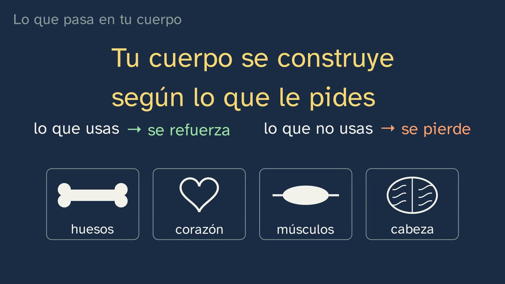
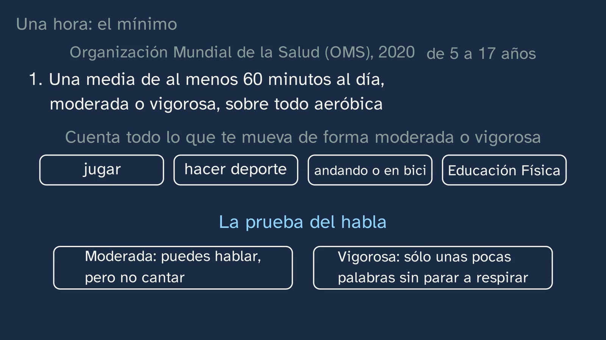
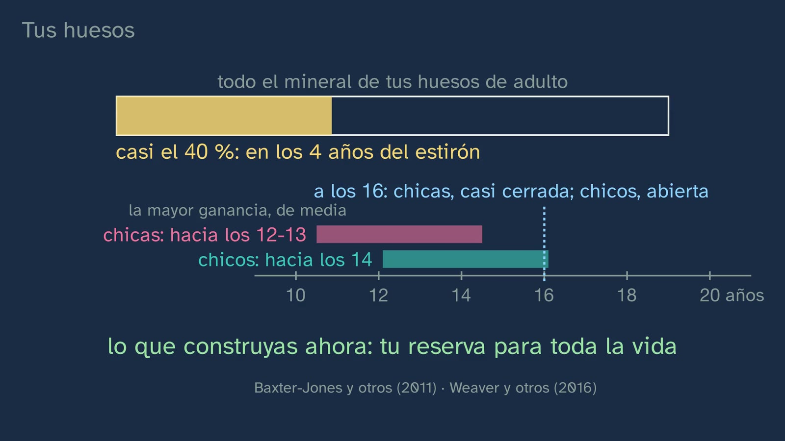
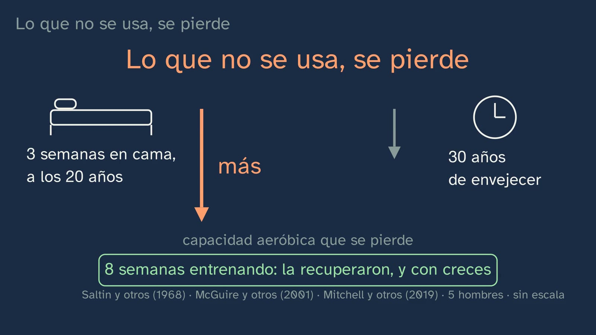
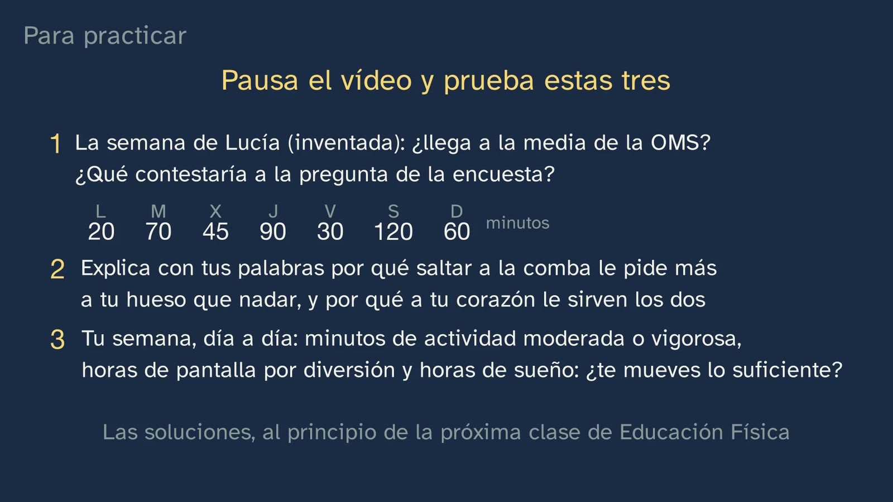
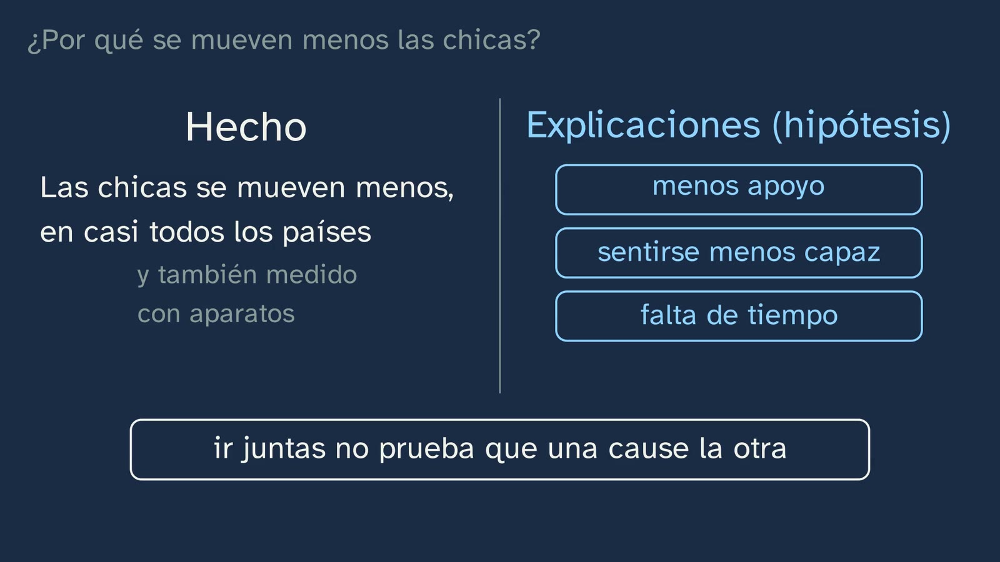
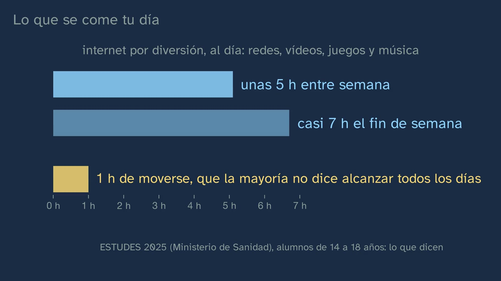
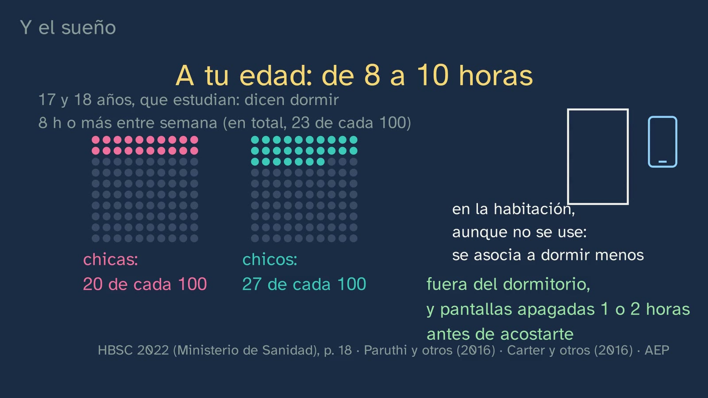
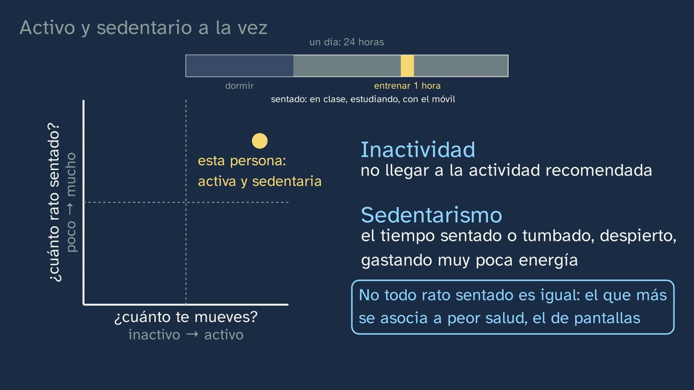

How much do we move?
In a nutshell
This is the channel's first Physical Education class, and it opens the topic "Your body, your lab". It has a clear message: an hour a day is the minimum, not the goal, because your body builds itself according to what you ask of it. Isidora starts with a bet: out of every hundred girls aged 17 and 18 who study in Spain, how many say they move for at least an hour every day? Seven; of the boys, about nineteen (HBSC 2022 study, Spain's Ministry of Health). Is that a lot or a little? What decides it is something students bring from lower secondary (ESO): daily activity has a "minimum rate". The WHO (2020) sets it for ages 5 to 17 as an average of at least 60 minutes a day of moderate or vigorous activity, and sums it up like this: the more, the better. It adds three days a week of vigorous and strengthening activity, and limiting time spent sitting, especially with screens for fun. Anything that gets you moving that way counts, and to know it without any device there is the talk test. Then comes the why, in four places in the body. Bone: in the four years around the growth spurt, almost 40% of the adult skeleton's mineral is laid down, and impacts strengthen it; that is why basketball asks more of it than swimming or cycling, which are great for the heart. The heart, a muscle that can be trained: it pumps more blood with each beat and, at rest, usually beats more slowly. Muscle, which takes most of the sugar out of the blood and, when it moves, opens the door to it without needing insulin. The mind: exercise programmes reduce the symptoms of depression somewhat, without replacing asking for help. And what you don't use, you lose: in a classic experiment (1966), three weeks in bed made the aerobic capacity of five twenty-year-old men fall more than the thirty years of ageing that followed; eight weeks of training gave it back to them, and then some. The second half answers how much do we really move? The HBSC survey has its literal question and two limits: it counts the days with the full hour and it records what each person says. Even so, its differences hold, because they are repeated when it is measured with devices. With age, less, and girls, in proportion, much less: from 3 boys for every 2 girls at ages 11-12 to 5 for every 2 at 17-18. Worldwide, 8 in 10 school students did not report reaching the hour every day (2016). Why girls? The fact goes in one column and the explanations, which are hypotheses, in another. Next, what eats up your day: students aged 14 to 18 say they spend about five hours a day on the internet for fun on weekdays (ESTUDES 2025), against one hour of moving. The day has 24 hours. The WHO strongly recommends limiting sitting time, without giving a figure, and others do draw the line at two hours: Canada and Australia, for screens for fun; the Spanish Association of Paediatrics, for ages 13 to 16, counting school and homework too. Sleep falls short: at 17 and 18, only 23 in every 100 say they sleep eight hours or more on weekdays, and having a phone in the bedroom is linked to sleeping less. The typical mistake: someone who trains for an hour and spends the rest of the day sitting is active and, at the same time, sedentary, because these are two separate accounts. The class closes with where to find your hour: walking or cycling to school (nearly half an hour on a school day), at break, through sport, and by taking it back from screens; Physical Education class alone is not enough. The last exercise is a log of the student's own week: minutes, internet and sleep.
Objective. By the end, students will be able to compare how much we really move with what their body needs (an average of an hour a day as a minimum, and why) and know where to find their hour against screen time.
For readers outside Spain: the Bachillerato is the last two years of secondary school (ages 16–18); it follows ESO, the four years of compulsory secondary education (ages 12–16). Physical Education is a core subject, taken by every student in the first year of Bachillerato. The LOMLOE is Spain's current education law; the BOE is Spain's Official State Gazette, where every law and decree is published, and the DOG and the BOCM are the official gazettes of Galicia and Madrid. Spain is divided into seventeen autonomous communities (regions), plus the autonomous cities of Ceuta and Melilla; each completes the national curriculum with its own and sets its own timetables. The AEP is the Spanish Association of Paediatrics. The video is in Spanish, with English subtitles; the images on this sheet come from the video and keep their Spanish text. Spanish documents (the decrees, the Ministry of Health's reports and recommendations, the AEP) are quoted in our translation; English sources are quoted in the original. Decimals are written here with a point (62.1), not with the Spanish comma.
Curriculum
Spain's Royal Decree 243/2022, Physical Education, a core subject in the first year of Bachillerato. Quotations checked on 06/10/2026 in the original PDF (BOE no. 82, 6 April 2022) and in the BOE's consolidated text (latest update published on 02/07/2026): they match. Our translation of the official Spanish text.
| Element | What the decree says | Where the class works on it |
|---|---|---|
| Core knowledge (block A, "Active and healthy life", social health) | "Social habits and their effects on physical fitness and health." (p. 46168) | Three habits: how much we move (6:41–9:20), how much time we spend with screens and sitting (9:20–12:27) and how much we sleep (10:47). Their effects, in the body: bone, heart, muscle and mind (2:58–6:35). Tobacco and alcohol have their own class in topic 4 |
| Core knowledge, in the same section (in passing) | "Physical activity practices with positive effects on personal and collective health: the practice of cycling as a habitual means of transport." (p. 46168) | Walking or cycling to school counts (2:07) and, there and back, can add up to nearly half an hour (12:27). It is developed in topic 9, "Cycling to school" |
| Specific competence 1 | "To internalise the development of an active and healthy lifestyle, planning their physical activity responsibly and consciously on the basis of personal self-assessment according to scientific and assessable parameters, in order to satisfy their demands for active leisure and personal well-being, as well as to learn about possible career paths associated with physical activity." (p. 46163) | The "scientific and assessable parameters": a recommendation with its reason in the body, a survey with its limits and the talk test as a measure of one's own. The "personal self-assessment", in exercise 3: your week, logged and compared |
| Description of CE1 (specific competence 1) | It can be approached from "healthy lifestyles (healthy eating, not consuming alcohol, tobacco and other drugs, physical activity and reduction of sedentary behaviour, rest, appropriate use of new technologies, treating others well)", and "The good use of technology should be an ally from a cross-disciplinary point of view in our area, especially in this competence, in the fight against sedentary behaviour and the so-called hypokinetic diseases caused, to a large extent, by the increase in screen exposure time." (both, p. 46164) | The class follows that line. "Physical activity and reduction of sedentary behaviour": the two accounts (11:20) and cutting back on what steals your hours (12:56). "Rest": sleep (10:47). "Appropriate use of new technologies": the five hours of internet for fun, the two-hour line and the phone out of the bedroom (9:20–11:20). The idea of the second sentence is the one at 10:02: every hour you spend sitting in front of a screen is an hour you don't spend moving, or sleeping |
| STEM2 descriptor (of CE1) | "… using appropriate tools and instruments, appreciating the importance of precision and truthfulness and showing a critical attitude towards the scope and limitations of the methods used." (p. 46069) | The scope and limits of a survey: its literal question (7:00), what someone says versus what a device measures, and why its comparisons still hold (7:17) |
| Criterion 1.1 | "To plan, design and put into practice autonomously a personal physical activity programme aimed at improving or maintaining health, applying the different systems for developing the physical capacities involved, according to individual needs and interests and respecting one's own bodily reality and identity, evaluating the results obtained." (p. 46167) | The starting point: how much you move, how much time you spend with screens and how much you sleep (exercise 3), and where to find your hour (12:27). The programme is built in topic 3 |
| Criterion 1.4 | "To act critically, committedly and responsibly in the face of social stereotypes associated with the bodily sphere and behaviours that put health at risk, applying with autonomy and independence scientific criteria of validity, reliability and objectivity to the information received." (p. 46167) | The "scientific criteria […] to the information received": how far to trust a survey (7:17), the fact kept apart from the hypotheses (8:49), "internet for fun" is not "screen time" (mistake 6) and each line, with whoever draws it (10:29). The "behaviours that put health at risk": a lot of time sitting with screens and sleeping too little. The "social stereotypes", in the open question (15:00) |
The decree does not name the WHO or give any number of minutes. The WHO recommendation is how the channel makes concrete the "scientific and assessable parameters" of CE1. One region asks for it in writing: Galicia, in the first year of Bachillerato, wants it to be worked on "taking into account the recommendations on healthy and utilitarian physical activity of international, national and regional bodies" (Decree 157/2022, DOG no. 183, p. 50728). In 2022 Spain adopted the same recommendations as the WHO (Ministry of Health, 2022, p. 26), so they are both the international and the national figure.
The body's why, in the curriculum. The core knowledge speaks of habits "and their effects on physical fitness and health": those effects are the central part of the class. They are new to students, because the national Physical Education curriculum for ESO does not deal with the effects of exercise on bone, the heart or the mind. The closest is in ESO Biology and Geology: the basic anatomy and physiology of the circulatory system and "Healthy habits: their importance in maintaining physical, mental and social health (sleep hygiene, postural habits, responsible use of new technologies, physical activity, emotional self-regulation, care and shared responsibility, etc.)." (RD 217/2022, p. 41612). In the first year of Bachillerato, those who take Biology, Geology and Environmental Sciences go further: its competence 5 allows students "to go deeper into the study of human physiology and thus propose and adopt lifestyles that help to maintain and improve health and quality of life. This aspect is particularly important given the upward trend in sedentary habits" (RD 243/2022, p. 46098).
What students need to bring. From ESO (Royal Decree 217/2022, BOE no. 76, 30 March 2022), in years 1 and 2: "Physical health: minimum rate of daily and weekly physical activity." (p. 41634), which the class retrieves at 1:10. Competence 1 of ESO Physical Education already says the same about screens as the Bachillerato one: "in the fight against sedentary behaviour and the so-called hypokinetic diseases caused, to a large extent, by the increase in screen exposure time" (p. 41630). The block for years 1 and 2 asks for "Critical analysis of body, gender and motor competence stereotypes" (p. 41634) and "Reflection on negative attitudes towards physical activity arising from preconceived ideas, prejudices, stereotypes or negative experiences." (p. 41635): that is the ground of the hypotheses about girls. In years 3 and 4, criterion 1.5 already asks for information to be checked "on the basis of scientific criteria of validity, reliability and objectivity" (p. 41636). And Biology and Geology asks for the "Differentiation between correlation and causation" (p. 41611). The ESO decree does not give the figure of an hour: the class assumes students arrive with "an hour a day", and the board says so (1:24: "minimum rate", in the ESO curriculum; the hour, from the WHO). Madrid does give it in the first year of ESO: "Minimum rate and recommendations for daily and weekly physical activity" (Decree 65/2022, BOCM no. 176, p. 465). The quotations from the ESO decree were checked on 06/10/2026 in the BOE PDF.
Textbooks. There is only one LOMLOE Physical Education textbook for the first year of Bachillerato (Teide, Pértiga, 2022), and in its units 1 to 3, the ones that can be read, it does not cite the WHO or give real data on how much boys and girls move in Spain (contrast of 05/10/2026, for contrast only: nothing in this sheet comes from it). Of 90 schools' book lists reviewed, only two ask for a textbook for this subject: teachers plan with their curriculum and their own notes.
How the class is built
Video chapters
Fifteen and a half minutes, in ten chapters. It is a theory class with a message: Isidora, in the sports hall, and the board. It follows the department's model (the channel's learning principles, in Spanish): the body as a lab, measured with judgement, and the theory on video so that the gym is left for moving. Each recommendation comes with its reason in the body, and screen time, with the figures of whoever sets them. It is the first of the topic's four classes; the next ones are the pulse (a lab), fitness tests and the devices that measure us.
| Chapter | What happens | Why this way |
|---|---|---|
| What we'll see | Isidora introduces herself. The map of the topic, with its four contents and today's highlighted. The hook, to camera (0:33): "Do you move enough?". The bet (0:39, pause): seven girls and about nineteen boys in every hundred, with a hundred little dots for each group (0:58). "Is that a lot or a little?": what students bring from ESO, is the hour the ideal or the minimum? (1:10, pause). The minimum: an hour is the minimum, not the goal (1:24). | Predicting before seeing and retrieving what they bring. The ESO question turns the retrieval into the message: the hour is a floor, and only seven in every hundred girls say they reach it every day. |
| One hour: the minimum | The WHO recommendation for ages 5 to 17, written as it is spoken: "at least", the floor, not the ceiling; "the more, the better"; one hour out of the 24 in your day (1:41). What counts (playing, sport, walking or cycling, Physical Education class) and the talk test (2:07). The other two: three days of vigorous and strengthening activity, and limiting time sitting with screens for fun (2:37). | The exact wording, with its source, and a measuring tool that needs no device. The last two recommendations promise their reason in the body, and the class delivers it. |
| What happens in your body | Why an hour: many benefits appear with an average of an hour a day, and they appear because your body builds itself according to what you ask of it (2:58). Bone: the growth-spurt window (3:24) and impacts, with the osteocytes (4:01). Stop and think: swimming or basketball? (4:30, pause). Basketball, because of the jumps; swimming and cycling, good for the heart and of little use to bone (4:42). The heart (4:59), muscle and its doors for glucose (5:29), the mind (5:58) and the three weeks in bed (6:13). Isidora, halfway through: the idea of the class (6:35). | The message, with a mechanism a 16-year-old can explain in their own words. "What you don't use, you lose" is taught with an experiment, and the recovery of its subjects hands control back to the student. |
| How much do we really move? | Back to the figures from the start, seven girls and nineteen boys in every hundred: the HBSC study, anonymous, and its literal question (6:41). Two warnings: it counts the days with the full hour, which is stricter than the WHO average, and it is what each person says; in about three hundred Spanish school students, another questionnaire gave about 11 minutes a day more than a device on the wrist. The seven is not an exact measurement, but the differences are repeated when it is measured with devices (7:17). | The channel's question, "how do we know?", applied to a health figure: criterion 1.4 and the STEM2 descriptor. The block ends with what to do with the figure: trust the comparisons that devices confirm. |
| Less as we grow up | The age ladder: 31 boys and 21 girls in every hundred at 11-12; 19 and 7 at 17-18 (7:54). Both lines go down, and the girls' falls much further, in proportion: from 3 boys for every 2 girls to 5 for every 2 (8:13). Worldwide, in 2016, 8 in 10 school students aged 11 to 17 did not report reaching the hour every day, and in almost every country girls moved less (8:31). | The comparison uses the same question, asked the same way to everyone. "In proportion" is said because in points the gap hardly changes (question 8 on the worksheet). |
| Why do girls move less? | Two columns: the fact (in almost every country, and also measured with devices) and the explanations, which are hypotheses: less support from family and school, feeling less capable in Physical Education and the lack of time that the girls themselves mention. Two things going together does not prove that one causes the other (8:49). | Article 10 of the channel's Constitution: facts and interpretations, kept apart. And a tool that works for everything, which comes back with sleep (11:04). |
| What eats up your day | How many hours of internet for fun? (9:20, pause). About five on weekdays and almost seven at the weekend, what students aged 14 to 18 say in ESTUDES 2025, against one hour of moving (9:41). The day has 24 hours; the WHO strongly recommends limiting sitting time and warns that too much sedentary behaviour can be unhealthy, without giving a figure (10:02). The two-hour line: Canada and Australia, for screens for fun and not counting homework; the Spanish Association of Paediatrics, for ages 13 to 16, counting school and homework (10:29). Sleep: 8 to 10 hours at your age; 23 in every 100 aged 17 and 18 say they sleep 8 or more on weekdays: girls, 20, and boys, 27; a phone in the bedroom is linked to sleeping less; out of the bedroom, and screens off one or two hours before bed (10:47). | Screens, with their figure and their small print: what students say, who draws the line and where. The 24-hour day ties moving, screens and sleep into a single account. |
| Active and sedentary at once | An idea that seems logical: someone trains for an hour every afternoon and spends the rest of the day sitting. Are they sedentary? (11:20, pause). Yes, and active too: inactivity and sedentary behaviour are two things, with two definitions and a two-axis grid (11:43). Not all sitting time is the same: studying or reading go with better marks; the kind most linked to worse health is screens for fun (12:14). | The mistake, presented as a reasonable idea and taken apart with definitions. The final nuance keeps sitting down to study from sounding as bad as the phone. |
| Win back your hour | Where to find it: walking or cycling to school, there and back, nearly half an hour on a school day; break time, sport, playing, dancing; Physical Education class alone is not enough (12:27). And cutting back on what steals it: swapping one of those five hours of internet for moving, getting up after a couple of hours of screen time, the phone out of the bedroom, and something you like, at your own pace (12:56). | The message ends in action, with numbers from the class itself. Each piece of advice has someone behind it who gives it. |
| Practice and keep thinking | The summary in six lines (13:27). Three exercises (14:14; the pause, at 14:57): Lucía's week, skipping versus swimming and the log of your week. The open question (15:00). The next class, the pulse (15:18). Isidora says goodbye: "your body builds itself according to what you ask of it" (15:38). | Practice with an invented example, an explanation in their own words and the self-assessment that CE1 asks for. The solutions open class 2. |
Bridges with other subjects. Mathematics: an average is not a minimum. If you reach 60 every day, the average reaches 60; the reverse is not true (Lucía's week). And the difference between subtracting and dividing, which decides whether the gap between boys and girls "grows". Mathematics I, Mathematics Applied to the Social Sciences I and General Mathematics ask in the first year for the "Difference between correlation and causation." (RD 243/2022, pp. 46341, 46354 and 46366): the chapter on girls and the one on the phone in the bedroom are real cases. Physics and Chemistry (Science track): "the ground pushes you with at least three times your weight" is Newton's third law with numbers, and why a jump pushes so hard is explained with impulse: stopping the fall in a very short time requires a large force. The core knowledge is in the first year: "Interpretation of the laws of dynamics in terms of magnitudes such as linear momentum and mechanical impulse: applications in the real world", with applications "such as engineering or sport" (RD 243/2022, p. 46198; checked on 06/10/2026). Biology, Geology and Environmental Sciences: the physiology of bone, heart and muscle, and insulin. Philosophy: what a fact is and what a hypothesis is.

A plan for a 50-minute lesson
Designed for watching in class with a projector and then going out to a space where students can walk (playground, sports hall or a wide corridor). If the video is watched at home, as a flipped class, the whole session can take place in the sports hall: the activity, the "other option" and the correction of Lucía's week.
| Minutes | What is done |
|---|---|
| 0–3 | No video. "Before you start", on the worksheet: last week, how many days they moved for an hour, how many hours they spend on the internet for fun on a school day and how many hours they usually sleep on weekdays. Each student writes it for themselves; it is not discussed aloud. |
| 3–8 | Video from 0:00 to 2:58. Stop at 0:52 (the bet: each student notes their two numbers in question 1) and at 1:20 (the ideal or the minimum?: show of hands). |
| 8–15 | Video from 2:58 to 6:41. Stop at 4:37 (swimming or basketball?: show of hands, with a reason). At the end of the section, questions 3 to 6 on the worksheet, in pairs (3 minutes). |
| 15–22 | Video from 6:41 to 9:20. Stop at 7:54, after the two warnings: question 7, in one minute. At the end of the section, "Fact or explanation?", in pairs (3 minutes). |
| 22–28 | Video from 9:20 to 12:27. Stop at 9:37 (how many hours of internet?: each student writes a number before hearing the answer) and at 11:37 (are they sedentary?: yes, no or it depends, show of hands). |
| 28–32 | Video from 12:27 to the end (15:44). The exercises, for homework; the log in exercise 3 starts today. |
| 32–47 | The activity: the talk test and, if there is time, "Does your bone feel it?". |
| 47–50 | Back in class, the second question of "Before you start", again just for themselves. |
Typical mistakes and how they are handled
With an honest warning: none of them has been measured with Spanish Bachillerato students. They are the ones anticipated by the topic's design sheet and the script review, and the ones found in writing in public documents (number 8, for example). Nobody, as far as we know, has measured how widespread they are among students.
- "An hour a day and that's it": the hour as a goal. The WHO says "at least" an average of 60 minutes (2020, p. 3) and sums it up like this: "the more, the better" (De un vistazo, the Spanish edition of At a glance, p. 1). The authors of the guidelines add that going beyond 60 minutes "provide additional health benefits" (Bull et al., 2020). The class says it at 1:24 ("the minimum, not the goal") and at 1:41. For anyone who asks "how much more?", the honest answer: at this age almost no study has measured where it stops adding up (WHO 2020, p. 27: "very few studies have addressed the issue of dose-response"), and "more" has limits, because the risk of injury rises with intensity (p. 27). The opposite mistake also exists: "if I don't reach the hour, it's no use". For those who are far from it, the recommendation is to build up little by little: "When a person does not meet the recommendations, it is recommended to increase their level of activity little by little" (Ministry of Health, infographic for ages 5 to 17, 2023).
- "Swimming strengthens your bones". Swimmers have a bone density similar to that of people who do no sport: "Most of the studies included in this review showed similar bone mineral density values in swimmers and sedentary controls", because of "the hypogravity and lack of impact characteristic of this sport" (Gómez-Bruton et al., 2013). Something similar happens with road cycling: "road cycling does not appear to confer any significant osteogenic benefit" (Olmedillas et al., 2012, mostly on adult cyclists). What helps bone is fast, strong loading; "static loads and repetitive low-magnitude loads are not osteogenic" (Weaver et al., 2016). The class says this at 4:42 without going to the other extreme: swimming is not bad for bone ("Swimming does not seem to negatively affect bone mass", Gómez-Bruton), and it is great for the heart. The board says "little", not "bad". A neighbouring mistake: "if I do sport, I won't break a bone". The most active children have more fractures, because they fall more (Weaver et al., 2016).
- "Exercise makes you smarter" or "makes you lose weight". These are the two most common exaggerations, and the class does not make them. For ages 14 to 18, the US scientific committee does not find enough evidence that moving improves intellectual performance ("Insufficient evidence", PAGAC 2018, p. F3-5), and a review focused on adolescents calls it "equivocal" (Li et al., 2017). What is proven is a small, short-lived effect after a session, clearer in children than at this age (PAGAC, p. F3-5). The WHO gives the cognitive benefit with moderate certainty for the whole 5-to-17 group, but its evidence comes mostly from children. For fat, the WHO gives low certainty: exercise trials give mixed results (2020, pp. 26 and 27); what is seen more strongly is that the most active gain less fat over the years (PAGAC, p. F7-7). And two more that may come up with sleep and mood: at 16, it has not been shown that moving relieves anxiety or helps you sleep better (insufficient evidence in young people: PAGAC, pp. F3-26 and F3-37). That is why the class sticks to bone, the heart, muscle and depression, which do have evidence at this age.
- Confusing inactivity and sedentary behaviour. "If I do my hour, I'm no longer sedentary", or the other way round, "if I spend a lot of time sitting, I'm inactive". Inactivity is "An insufficient physical activity level to meet present physical activity recommendations" (WHO 2020, glossary, p. vii; Tremblay et al., 2017), and sedentary behaviour is time spent awake, sitting, reclining or lying down, with an energy expenditure of 1.5 METs or less (the same sources; Ministry of Health, 2022, p. 8). The Ministry puts it like this: "We must not confuse sedentary behaviour with physical inactivity", and a person who meets the recommendations can be sedentary "because they spend a lot of time sitting without a break" (2022, p. 6). The class takes it apart at 11:20–12:27. Two cautions so as not to go to the other extreme. One: these are two recommendations; it is not that sitting time cancels out the hour of activity; and not all sitting time is the same: reading or doing homework go with better school results, and the association with worse health is stronger with leisure screens than with total sitting time (WHO 2020, pp. 30–31; the class says so at 12:14). Two: using a wheelchair is not, in itself, being sedentary, because you can be active while sitting (WHO 2020, p. 64; see "Notes").
- Reading the survey figure as a measurement. The 7% of girls and 19% of boys are what boys and girls aged 17 and 18 who are still in education say, with a question that counts days, not minutes (7:00). It has two limits. One: it counts the days with the full hour, and that is stricter than the WHO average. Every week that reaches 60 every day reaches the average, but not the other way round: Lucía has an average of 62.1 minutes and only four days of 60 or more. It is the rule the WHO used in 2010 ("every day"); in 2020 it changed to "an average" because the studies used averages (WHO 2020, p. 27), and the surveys still count the old one so that they can be compared with earlier years (international HBSC, vol. 4, p. 1). This limit pushes the figure down. Two: it is what each person says. In the study by Schröder et al. (2021), with Spanish school students aged 8 to 16, another questionnaire gave 106.5 minutes a day of moderate or vigorous activity and the accelerometer, 95.2 (7:28). This limit probably pushes it up, although that is not certain: that questionnaire is a different one, which measures minutes, and what people report can be wrong in both directions (Guthold et al., 2020, "Discussion"). That is why the class does not correct the seven in either direction and sticks to what does hold up: the differences between boys and girls and with age are repeated with devices (7:45). In the international ICAD database, with accelerometers from 27,637 young people in ten countries, "Boys were less sedentary and more active than girls at all ages" (Cooper et al., 2015). And each question gives its own number: in the same HBSC, vigorous activity four or more times a week in free time is reported by 48.3% of boys and 24.2% of girls (summary, p. 3). No figure is "the true one": they measure different things.
- "They spend five hours a day looking at a screen". The ESTUDES question is a different one: «¿CUÁNTAS HORAS DE MEDIA DEDICAS A INTERNET POR DIVERSIÓN (chateando, mandando o recibiendo e-mails, whatsApps, usando redes sociales, jugando con o sin dinero, escuchando o descargándote música, viendo o descargándote videos…) EN UN DÍA?» ["ON AVERAGE, HOW MANY HOURS DO YOU SPEND ON THE INTERNET FOR FUN (chatting, sending or receiving e-mails, WhatsApps, using social media, gaming with or without money, listening to or downloading music, watching or downloading videos…) IN A DAY?"] (ESTUDES 2025 questionnaire, p. 28). It includes listening to music, it does not ask about what does not go through the internet (ordinary television, for example), it is what each student says in a paper questionnaire, and nobody in Spain has measured it with devices at this age. The class says it correctly: "internet for fun", "what they say" (9:41). The two-hour lines, on the other hand, speak of screens: leisure screens in Canada and Australia, and all screens, including school ones, for the AEP. For exercise 3 either count is valid (the video says "screen for fun"; the worksheet, "internet for fun"), as long as students say which one.
- Taking a correlation for a cause. This is the mistake the class takes apart at 8:49: that girls' lower activity goes together with less support or with feeling less capable does not prove that this causes it. Telford et al. (2016) saw it in Australian school students aged 8 to 12; the review by Duffey et al. (2021) gathers the barriers girls name, without comparing them with boys. The class's second case is the phone in the bedroom (11:04): the 20 studies in the meta-analysis by Carter et al. (2016) are cross-sectional, so we know it goes together with sleeping less, not that it causes it. The voice says it correctly ("is linked to"); the board, more briefly ("you sleep less"). A good question for students: what would it take to prove that one thing causes the other? There is a real attempt: in Switzerland some adolescents were asked to stop using screens from 21:00 on school days, for two weeks, and those who cut down the most fell asleep earlier and slept longer (Perrault et al., 2019). But it had no control group: a good exercise in finding its flaws.
- "The WHO says two hours of screen time a day at most". It doesn't: neither the WHO in 2020 nor the Spanish update of 2022 gives a figure ("There is insufficient evidence to specify time limits on sedentary behaviour", WHO 2020, p. 31; Ministry of Health, 2022, p. 26). The class says so at 10:19 and attributes the line to whoever draws it (10:29). The mistake circulates in public documents: the PASOS 2019 report writes that "The WHO recommends a maximum use of screens of 120 minutes a day" (p. 43), and the Plan Estratégico Nacional para la Reducción de la Obesidad Infantil 2022-2030 (Spain's national strategic plan for reducing childhood obesity) defines sedentary behaviour as more than two hours of screens a day "in accordance with the WHO recommendation". The two hours are from Canada (2016), Australia (2019), the Ministry of Health in 2015 (since replaced) and the AEP (2024): see "Notes".
- "The talk test is the WHO's definition". It is a rule of thumb used by the US CDC, the British NHS and the Ministry of Health (2022, p. 8). The WHO defines intensity in METs (moderate, from 3 to less than 6; vigorous, 6 or more) and on a scale from 0 to 10 relative to each person's capacity (glossary, p. vii). The class presents it as a way of knowing (2:21), without attributing it to the WHO.

Questions and solutions
Stop and think (in the video)
- The bet (0:39; the pause, at 0:52). Seven girls and about nineteen boys in every hundred (7.2% and 18.6%; HBSC 2022, technical report, p. 33). There is no bad bet: what matters is whether they guess above or below, and why. It is worth keeping their bets: at 6:41 they will learn that these figures are "what they say", counting the days with the full hour.
- Is the daily hour recommended at your age the ideal or the minimum? (1:10; the pause, at 1:20). The minimum (1:24). ESO speaks of a "minimum rate" and the WHO says "at least". Whoever answers "the ideal" holds the most widespread idea, and it is exactly the message the class wants to change (mistake 1).
- What asks more of your bones, an hour of swimming or a basketball game? (4:30; the pause, at 4:37). Basketball, because of the jumps (4:42). Basketball is one of the examples of activities with impacts of at least three times body weight ("volleyball, basketball, martial arts, and gymnastics", PAGAC 2018, p. F7-12); in water there are no impacts. The best answers say why, and don't say that swimming is bad.
- How many hours do you think boys and girls your age spend on the internet for fun? (9:20; the pause, at 9:37). About five on weekdays (5.1) and almost seven at the weekend (6.7), according to what students aged 14 to 18 say in ESTUDES 2025 (OEDA, 2026, p. 61, table 52). By age, on weekdays: 5.3 hours at 16, 5.4 at 17 and 5.2 at 18. It is worth having each student compare their bet with their own answer in "Before you start", without saying it aloud.
- Are they sedentary? (11:20; the pause, at 11:37). This is question 11 on the worksheet: solution below.

From the student worksheet
Before you start. There is no right answer: it is their starting point, and it is theirs. They also answer the second question, at the end of the class, just for themselves. A good review, invented: "I put 'three days', 'about four hours' of internet and 'seven hours' of sleep. Three days don't tell me whether I reach the average: I need to write down the minutes. Four hours on weekdays is less than the five people my age say, but twice the two-hour line. I sleep less than the eight I need. And I train on Tuesdays and Thursdays, but I spend the afternoon sitting: I'm active and sedentary at the same time." What is valued is that they use the class's figures and words, not how much they move.
While you watch the video.
- Your bet. Seven girls and about nineteen boys in every hundred (0:58).
- The ideal or the minimum? The minimum. "At least" means that 60 minutes on average is the floor, not the ceiling: more activity is better, according to the WHO itself (1:24–1:58).
- Bone. It is a window because in the four years around the growth spurt almost 40% of the mineral the adult skeleton will have is laid down; the biggest gain comes, on average, at around 12-13 in girls and around 14 in boys, so at 16, on average, it has almost closed for girls and not yet for boys (3:24). But bone keeps gaining until past 20, and moving still adds to it. Impacts strengthen it: when you jump, run or stop sharply, the bone deforms a little; cells inside it, the osteocytes, sense this and order it to be strengthened (4:01). A complete answer ties it to the idea of the class: bone builds itself according to what you ask of it. Note for teachers: this mechanism is known "primarily from animal studies" (Weaver et al., 2016), and the ages are averages from a Canadian cohort.
- The heart. It can be trained because it is a muscle. Trained (by running or swimming regularly), it gets a little bigger inside, pumps more blood with each beat and, at rest, usually beats more slowly (4:59). In teenage boys this has been seen in about ten weeks, and in children, that it is lost if they stop. Note: why the resting pulse goes down is still debated (Reimers et al., 2018); better not to ask for it. It is measured in class 2.
- Muscle and mind. Muscle is what takes the most sugar out of the blood: after a meal, most of the glucose goes into it. Normally insulin opens the door for it; when muscle moves, it opens the door by itself, and with training it gains more doors. That is why moving helps insulin work better (5:29). The mind: moving protects against depression, and exercise programmes reduce its symptoms somewhat, in adolescents too; it is a help, but it does not replace asking for help when you are not well (5:58).
- Three weeks in bed. In 1966, the aerobic capacity of five 20-year-old men fell more in three weeks in bed than in the thirty years of ageing that followed; with eight weeks of training they got it back, and then some (6:13). Note: it fell from 3.3 to 2.4 litres of oxygen per minute (27% less), rose to 3.9 after training (18% above the starting level), and thirty years later it was 11% below the starting level (2.9) (McGuire et al., 2001; Mitchell et al., 2019; calculations run). They were five men: it works as an example, not as a law.
- Why is the survey not an exact measurement? One: it counts the days on which the full hour is reached, which is stricter than the WHO average (a longer day does not make up for a light one). Two: it is what each person says about themselves; in a study with about three hundred Spanish school students, another questionnaire gave on average about 11 minutes a day more than a device on the wrist (7:17). Even so, we can trust the differences between boys and girls and with age, because they are repeated when it is measured with devices (7:45). Note: which way each limit pushes, in mistake 5.
- "In proportion". Because in points the gap hardly changes (from about 10 to about 11 points between the extremes), but in proportion it does: at 11-12, for every 2 girls there are 3 boys; at 17-18, 5. Girls lose almost two thirds (from 20.5 to 7.2%) and boys, less than half (from 30.8 to 18.6%) (8:13). Note: the ratio peaks at 15-16 (5.8 boys for every 2 girls) and falls a little at 17-18; the voice only compares the extremes.
- Internet for fun. About five hours a day on weekdays and almost seven at the weekend, according to what students aged 14 to 18 say (ESTUDES 2025). Everything done on the internet for fun counts: social media, videos, games and music (9:41). Canada and Australia draw the line at no more than two hours a day of screen time for fun, not counting homework. The AEP asks, for ages 13 to 16, for less than two hours a day even counting school and homework time, so it is stricter: it counts all screens (10:29).
- Sleep. 8 to 10 hours at this age (10:50). Having your phone in the bedroom at night, even if you don't use it, is linked to sleeping less; that is why paediatricians advise leaving it outside and switching screens off one or two hours before going to bed (11:04). The best answer says "is linked to", not "takes away" (mistake 7).
- Active and sedentary at once? Yes. Inactivity is not reaching the recommended activity; sedentary behaviour, the time you spend sitting or lying down, awake, using very little energy. They are two separate accounts: someone who trains for an hour and spends the rest of the day sitting is active and, at the same time, spends many hours sedentary (11:43).
- Where to find your hour? Walking or cycling to school (there and back, nearly half an hour on a school day), at break, through sport, playing, dancing, and by taking it back from screens: of those five hours of internet, swap one for moving (12:27–12:59). Physical Education class alone is not enough because it is two or three hours a week: spread over seven days, 120 / 7 = 17.1 or 180 / 7 = 25.7 minutes a day, less than half an hour (12:46; calculation run).

The talk test. It is a test of each person, and the answer depends on their pace and their fitness: the WHO measures intensity "relative to an individual's personal capacity" on its scale from 0 to 10 (glossary, p. vii). What to expect, with the sources: strolling calmly, talking and singing without effort: light (Ministry of Health, 2022, p. 8: "walking at a slow pace"). Walking fast, talking yes, singing is hard: moderate (Ministry of Health, "walking at a brisk pace (more than 6 km/h)"; CDC, "Walking briskly"). Going up some stairs at a good pace has no single answer: for some it will be moderate and for others, vigorous. Skipping, for one minute without stopping, the expected answer is vigorous: only a few words without stopping for breath. In the Ministry of Health's table for ages 6 to 18, "Skipping rope" is among the vigorous activities, like "Swimming" and "Basketball" (2022, p. 43, with data from the youth compendium of physical activities by Butte et al., 2018, which at ages 16-18 gives skipping 7.4 METy and self-paced swimming 8.6; checked on 06/10/2026). Anyone doing gentle little hops and stopping often may stay at moderate. Cycling to school depends on how: leisurely, moderate; pedalling fast, vigorous (Ministry of Health, p. 8: from 16 to 19 km/h, moderate; from 19 to 22 km/h, vigorous). Their own activity, whatever their test says. Criteria: they really do the test (talking and singing while moving, not afterwards), they classify with the class's words and, for a high mark, they explain why the same activity is not the same for everyone. Nobody's result is marked: the method is.
Does your bone feel it? Gentle little hops: yes, there is a jolt on landing; the floor pushes you suddenly, and that kind of load, fast and with impact, is the one that strengthens bone. The Ministry of Health defines bone-strengthening activities like this: "activities, generally involving impact with the ground (osteoarticular impact), that produce a mechanical tensile or compressive force on the bones, which promotes their growth and strengthening. For example: running or jumping." (2022, p. 9; checked on 06/10/2026). On tiptoe, slowly: there is no jolt. It works the calf muscle, but asks little of the bone: "static loads and repetitive low-magnitude loads are not osteogenic" (Weaver et al., 2016). Swimming or cycling: no jolt, because in water you float and on a bike you are sitting. Criteria: they tell the jolt apart from the effort (tiptoes are tiring, but there is no impact) and explain it with the class's impacts. One caution when marking: half a minute of jumping does not build bone; in the studies that worked, the interventions lasted about six months (PAGAC 2018, p. F7-12).

Fact or explanation?
- F. The data say so: 7.2% of girls versus 18.6% of boys (HBSC 2022, technical report, p. 33). Note: the fact is what they say, and the sentence respects that.
- E. It is an explanation with "because": what has been seen is that the two go together, not that one causes the other (8:49).
- F. It is what they answer in ESTUDES 2025: 5.1 hours on average on weekdays (OEDA, 2026, p. 61, table 52). The fact is what they say; whether it is what they really spend would be another matter (mistake 6).
- E. This is the worksheet's trap. What has been seen is that those who have their phone in the bedroom tend to sleep less, in cross-sectional studies (Carter et al., 2016); "takes away" claims it is the cause. The class's voice says it correctly: "is linked to sleeping less" (11:04).
- F. It is what was measured in that experiment (McGuire et al., 2001; Mitchell et al., 2019). Note: it is a fact about five men; saying that the same would happen to everyone would be a generalisation.
- F, with a nuance. That the two go together is what the studies have observed (Telford et al., 2016: girls scored 9% lower in "perceived competence in physical education"). What would be an explanation is saying that they move less because they feel less capable, and the sentence doesn't say that. E is acceptable if it is reasoned this way; the best answer distinguishes "they go together" (fact) from "one causes the other" (hypothesis).

Practice (the solutions open class 2)
- Lucía's week (made up): Monday 20, Tuesday 70, Wednesday 45, Thursday 90, Friday 30, Saturday 120 and Sunday 60 minutes. Does she reach the WHO average? What would she answer to the survey question? It adds up to 435 minutes; the average is 435 / 7 = 62.1 minutes a day: she reaches the WHO average. In the survey she would answer "4 days": Tuesday, Thursday, Saturday and Sunday. Sunday counts, because the question says "at least" 60, and exactly 60 is enough. So she meets today's recommendation, but in HBSC she would not count among those who move every day (calculations run). For a higher mark: to reach 60 every day she would need 85 more minutes (40 on Monday, 15 on Wednesday and 30 on Friday), even though she already reaches the average. Criteria: they add up and divide by seven, not by the days she moved; they count the days of 60 or more correctly, including the one with exactly 60; and they answer the two questions separately.
- Explain in your own words why skipping asks more of your bones than swimming, and why both are good for your heart. Bone: when skipping, every time you land the floor pushes you suddenly, and those impacts deform the bone a little; the osteocytes sense this and order it to be strengthened. In water you float and there are no impacts, so swimming hardly asks anything of the bone. Heart: both, done continuously for several minutes, move large muscles rhythmically and make the heart pump more blood; as it is a muscle, both train it. An example of a good answer, invented: "When I skip, every time I land the floor pushes me and my bone bends a tiny bit; its cells sense it and strengthen it. When I swim I float and there are no jolts, so it hardly asks anything of my bone. Both are good for my heart, because with both I speed up and breathe hard for a long time, and the heart, being a muscle, gets trained." The sources: skipping is among the exercises that build bone ("hopping and jumping (including with a jump rope)", NIAMS, «La salud de los huesos de los niños», the Spanish page on children's bone health, reviewed in May 2023; checked on 06/10/2026); the Ministry of Health defines aerobic activities as those that "improve cardiorespiratory function because they require the body to transport oxygen using the heart and lungs", those in which "the large muscle groups move rhythmically" for several minutes or more, with "swimming" among its examples (2022, p. 8), and it lists skipping and swimming among the vigorous activities (p. 43). Criteria: bone, with impacts (or "jolts on landing") and, for a higher mark, with the osteocytes; swimming, without impacts because you float; the heart, with both making it work for a long time and the fact that it is a muscle; and nothing like "swimming is bad". An answer that adds that skipping is usually more intense than gentle swimming is also valid, if it is backed by the talk test.
- For a week, write down each day your minutes of moderate or vigorous activity, your hours of internet for fun and your hours of sleep, and compare them with what you have seen today. It is open and personal: the solution is the method. For the minutes, the week's total divided by seven (the WHO average) and how many days reached 60 (what they would answer in HBSC). For internet and sleep, also the Monday-to-Friday average, because that is how ESTUDES and HBSC ask; and the comparison with the class's figures: about five hours of internet on weekdays, the two-hour line, 8 to 10 hours of sleep. An invented example, with its calculations run: minutes 45, 70, 30, 75, 20, 90 and 0 add up to 330, an average of 47.1: it does not reach the average, it is 90 minutes a week short, about 13 a day; it reached 60 on three days (Tuesday, Thursday and Saturday). Internet: 4, 3, 5, 3, 4, 6 and 7 hours, an average of 3.8 from Monday to Friday: less than the five people that age say, but almost twice the two-hour line. Sleep (the night before): 7, 7, 6.5, 7, 7.5, 9 and 9, an average of 7 hours from Monday to Friday: below 8. A high-mark conclusion: "If I swap one hour of internet for moving on two weekdays, I reach the average" (330 + 120 = 450 minutes, 450 / 7 = 64.3). Criteria: all seven days logged; the talk test used to decide which minutes count; the calculations done correctly; the comparisons with the class's figures; and, for a high mark, the limits of the log itself: it is both the survey and the device, it is written down from memory and may leave out what doesn't seem like exercise (walking somewhere, climbing stairs). Their numbers are theirs: the method is what is marked, nobody has to show their minutes, their internet hours or their hours of sleep, and nobody is ever marked on how much they move. It is worth keeping the log: it is the starting point for the personal programme in topic 3 (criterion 1.1).

Keep thinking. Why do you think that, with age, the girls who say they move every day drop, in proportion, much more than the boys? And what would you change so that it didn't happen? It has no textbook answer, and neither the video nor this sheet gives its own. Some leads for the debate, without closing it:
- Look at the data before explaining them. Does it fall the same way at every age? (The ratio peaks at 15-16.) Are they the same people? (No: HBSC is a cross-sectional study, which asks school students of different ages in the same year; methodology report, p. 4.) Who is missing at 17-18? (Those who are no longer in education.) And if minutes are measured with devices? In the ICAD database, boys move more than girls at all ages, but their minutes of moderate or vigorous activity fall somewhat faster with age: 2.7 minutes a day per year in boys and 2.2 in girls (Atkin et al., 2025). The question is about how many say they reach the hour every day, and that is not the same as how many minutes they move: a good opportunity to tell the two apart.
- What the studies say, as hypotheses. Support from friends, family and teachers and lack of time are the barriers that appear most often in the reviews (Duffey et al., 2021); perceived competence, in the study by Telford et al. (2016). None has been proven to be a cause.
- What would you change? This is the values part, and everyone answers it with reasons. For anyone who wants to test their ideas, the authors of the Duffey review propose "an inclusive approach to curriculum development to address gender norms", training professionals to include girls and changing environments, in and out of school, so that girls can move "in a safe and attractive environment" (2021, abstract; checked on 06/10/2026). These are the authors' proposals, not proven results.
- What the curricula ask for. ESO asks for "Critical analysis of body, gender and motor competence stereotypes" (RD 217/2022, p. 41634), and Madrid, in the first year of Bachillerato, for "Detection and analysis of negative attitudes towards physical activity arising from preconceived ideas, prejudices, stereotypes or bad experiences…" (Decree 64/2022, p. 135). They are good questions for the classroom, not answers.
- Separate two questions. One is about facts: why does it happen? The other is about values: what should be done? Both are legitimate, and the teacher moderates without giving a verdict (articles 9 and 10 of the channel's Constitution). Topic 8 has a class on sport and gender.

A classroom activity
The talk test, in the playground (about 12 minutes, in pairs, after watching the video; it works on CE1, self-assessment "according to scientific and assessable parameters", and criterion 1.4: what a tool really measures).
Materials: the "Talk test" table on the worksheet and a pencil; a space to walk (playground, sports hall or a wide corridor, preferably flat); a song each student knows; if available, a skipping rope or two. No device is needed.
- Explain (2 minutes). In pairs. One moves and the other chats with them; then they swap. Each student decides their pace and can stop whenever they want. Nobody runs or jumps if they don't want to. Anyone who can't walk, or shouldn't exert themselves, does the test with what they can do (moving their arms while seated, pushing their wheelchair, walking more slowly) or is the partner who keeps the conversation going.
- Strolling calmly (2 minutes). One minute strolling. While moving, they answer their partner's questions and sing two lines of their song. They note in their table: talk? sing?
- Walking fast (2 minutes). One minute at a brisk pace, with the same test. They note it down.
- A bit more (3 minutes, voluntary). Anyone who wants to climbs some stairs at a good pace, jogs gently or skips (or does little hops on the spot) for one minute, always at their own pace. The same test. Anyone who feels any discomfort stops.
- Classify and share (3 minutes). Each student classifies their activities (light, moderate or vigorous). Together, with no names and nobody's results: what went first, being able to sing or being able to talk? Was the same activity equally intense for everyone?
For teachers: what they will find. That singing goes before talking: that is what separates light activity (you can talk or sing without effort), moderate (talking yes, singing no) and vigorous (only a few words) in the three sources of the test (Ministry of Health, 2022, p. 8; CDC; NHS). That strolling calmly comes out light and walking fast, moderate, as in the Ministry's examples. That skipping, for one minute without stopping, usually comes out vigorous, as in the Ministry's table (2022, p. 43). And most importantly: that the same activity is not equally intense for everyone. The stairs or the jog will be moderate for some and vigorous for others, because the test measures intensity for each person, like the WHO's scale from 0 to 10, "relative to an individual's personal capacity" (2020, glossary, p. vii). That is why the test works for exercise 3: each student counts their minutes with their own yardstick. Nobody is compared with anybody, and nobody is asked aloud who ran out of breath. Criteria: they apply the test during the activity; they classify with the class's three words; and they explain why the same activity can be moderate for one person and vigorous for another.
And, if there is time: does your bone feel it? (about 4 minutes, optional, straight afterwards; it prepares exercise 2).
- Gentle little hops (half a minute). On the spot, on a non-slip floor, wearing shoes, landing quietly with the knees slightly bent. No competing: jumps are not counted.
- On tiptoe, slowly (half a minute). Rising up and lowering again without leaving the floor.
- Note and compare (2 minutes). In the "Does your bone feel it?" table: in which one do you feel a jolt when you land or put your weight down? Which asks more of the bone, and why? Where would the jolt be in swimming or cycling?
For teachers. What to expect and why is above, in the worksheet solutions. It is an activity for feeling the difference, not for measuring anything: half a minute of jumping doesn't build bone. Safety and inclusion: it is voluntary and can always be adapted. Anyone with pain, an injury or advice not to jump does only the second row or thinks it through; anyone in a wheelchair thinks it through: where would there be a jolt, and where not? If the activity, or a variation of it, works for you, tell us about it in the Ágora (in Spanish), in this class's thread.
Another option: what I said versus what I logged (10 minutes, at the start of class 2, once students have their week from exercise 3).
- Each student, for themselves (4 minutes). They compare what they answered from memory in "Before you start" with what their log says: on how many days did they reach 60? What is their average? How many hours did they sleep from Monday to Friday?
- The class, anonymous and voluntary (3 minutes). Anyone who wants to writes on a slip of paper, the same for everyone and with no name, just a number from 0 to 7: the days they reached 60 in their log. Anyone who doesn't want to hands in the slip blank. The teacher counts the slips and draws on the board how many there are of each number.
- Compare with Spain (3 minutes). Next to it, the same distribution from HBSC 2022 for their age group (technical report, p. 33). For ages 15-16: 0 days, 6.5%; 1, 5.9%; 2, 13.6%; 3, 17.0%; 4, 20.0%; 5, 13.2%; 6, 8.3%; 7, 15.5%. For 17-18: 11.3%; 8.4%; 13.7%; 15.5%; 18.7%; 11.9%; 7.7%; 12.7%. To do the same with sleep, the hours they say they sleep on a weekday (technical report, p. 18). At 15-16: 5 hours or less, 9.9%; 6, 19.6%; 7, 33.8%; 8, 28.5%; 9, 6.6%; 10 or more, 1.6%. At 17-18: 15.5%; 27.3%; 33.7%; 18.7%; 3.5%; 1.2%. And the good question: what can't be concluded? A class is not a sample of Spain; a one-week log is not a survey; and what is written down is not what a device would measure either.
For teachers: nobody shows their log or their answer from memory; the slips are destroyed at the end. What is discussed is the method, not anybody's results.

Open resources: data and guides
What the class teaches can be taken further with free data and guides. All the links are open and were checked on 06/10/2026.
| Resource | What it covers | How to use it in class |
|---|---|---|
| HBSC 2022 study in Spain (Ministry of Health; University of Seville team) | The technical report (activity over the last 7 days, p. 33, and weekday hours of sleep, p. 18, by sex and age), the summary, the methodology report, a report for each autonomous community, infographics and a comparative report from 2002 to 2022. In Spanish, free and without registration. Reusable for any purpose under three conditions of the Ministry's legal notice: not distorting it, citing the source and citing the date of the latest update. The citation suggested by the technical report: «Moreno C, Rivera F, Sánchez-Queija, I, et al. Informe técnico de los resultados obtenidos por el Estudio Health Behaviour in School-aged Children (HBSC) 2022 en España. Ministerio de Sanidad, 2025.» | The whole table on p. 33, for the "other option" in the activity or to draw the ladder with all four groups; the one on p. 18, for sleep. The report for the students' own region, to compare it with Spain, with a warning: the samples are much smaller, and small differences may be chance. The "dynamic tables" link to the team's website, which gave "page not found" on the day of the check |
| HBSC Data Browser (international HBSC network) | Data from the 2013/14, 2017/18 and 2021/22 surveys in the network's countries and regions, Spain among them, by country, sex, age and socioeconomic level, with its definition: the percentage who say they reach 60 minutes of moderate or vigorous activity every day. In English, free and without registration. It states no licence: link to it and cite it as the page itself asks | To place Spain among the other countries, with the same question. Careful: here the ages are 11, 13 and 15, not the two-year groups of the Spanish report, so the figures do not match those in the video. A good exercise in judgement: why do two sources from the same study give different numbers? |
| Actividad física para la salud y reducción del sedentarismo. Recomendaciones para la población (Physical activity for health and reducing sedentary behaviour. Recommendations for the population; Ministry of Health, 2022) and its infographic for ages 5 to 17 (2023) | The official recommendations in Spain, by age. The difference between sedentary behaviour and inactivity (p. 6); light, moderate and vigorous intensity, with the talk test, and what an aerobic activity is (p. 8); which activities improve bone mass (p. 9); the recommendation for ages 5 to 17 (p. 26); and a table of activities by intensity for ages 6 to 18 (p. 43). In Spanish, free, without registration and reusable under the Ministry's conditions | Pages 8 and 9, for exercise 2 (aerobic versus impact) and for the activity. The table on p. 43, so that students classify their own activities before the log. The infographic, to project: its drawings (dancing, skipping, playing ball, cycling) are the list of "what counts" |
| «¡Muévete más! Calendario semanal de actividad física de 5 a 17 años» ("Move more! Weekly physical activity calendar for ages 5 to 17"; Ministry of Health, Estilos de Vida Saludable website) | A sheet for writing down, day by day, activities, how long they last and how intense they are, with the recommendations alongside ("At least an average of 60 minutes a day"). In Spanish, free, without registration and reusable under the Ministry's conditions | An alternative to the worksheet table for the minutes in exercise 3. It also separates aerobic activities from strengthening ones |
| Informe sobre adicciones comportamentales y otros trastornos adictivos 2025 (Report on behavioural addictions and other addictive disorders 2025; Spanish Observatory on Drugs and Addictions, OEDA, Ministry of Health, 2026; ESTUDES 2025 data) | The hours of internet for fun that students aged 14 to 18 report, on weekdays and at weekends, by age and sex (p. 61, table 52), and the hours of social media (p. 65). In Spanish, free and without registration. Reusable citing the source and the date, according to the legal notice of the National Plan on Drugs | So that each student can compare their log with people of their exact age (5.3 hours at 16; 5.4 at 17). Two warnings: the weekend breakdown by sex has an impossible typo (total 6.7 with boys 6.5 and girls 6.1), and the "problematic use" percentages come from questionnaire screening, not diagnoses: describe them with "possible" |
| Plan Digital Familiar (family digital plan; Spanish Association of Paediatrics, updated in December 2024) | The screen recommendations by age (from 13 to 16, "Less than two hours (including school time and homework)"), the sleep recommendations ("Avoid using screens 1-2 hours before going to bed and keep devices switched off and out of the bedroom") and a tool for each family to make its plan and print it. In Spanish, free and without registration. All rights reserved (© Plan Digital Familiar): we have found no reuse licence, so link to it rather than copying it | For students to do at home, with their family, if they want: it is CE1's "appropriate use of new technologies" taken home. With a warning: the same website says that more than two hours increase the risk of "cognitive impairment and dementia", and we have not been able to verify it; better not to use that sentence in class |
| Recomendaciones canadienses para moverse las 24 horas para niños y jóvenes (the Spanish version of the Canadian 24-Hour Movement Guidelines for Children and Youth; Canadian Society for Exercise Physiology; original from 2016, official Spanish translation from 2026) | The whole day in four parts, "sweat, step, sleep, sit": at least 60 minutes of moderate to vigorous activity, several hours of light activity, 8 to 10 hours of sleep from 14 to 17 and no more than 2 hours a day of recreational screen time. Two pages, free and without registration. No open licence, but CSEP allows printing "as many copies as you like" | It is the clearest summary of the chapter "What eats up your day", in Spanish (the English original is in the sources). A detail for teachers: in the general statement, the Spanish translation drops sleep («niveles altos de actividad física y niveles bajos de sedentarismo», "high levels of physical activity and low levels of sedentary behaviour"); the original adds "and sufficient sleep each day" |
| «La salud de los huesos de los niños» ("Children's bone health"; NIAMS, US National Institutes of Health; reviewed in May 2023) | Why childhood and adolescence matter for bone and which exercises strengthen it, among them "hopping and jumping (including with a jump rope)", basketball and football. In Spanish, free and without registration. Its text is in the public domain ("The text you find on this site is in the public domain"); many of its photos are not | For exercise 2, and for anyone who wants to read the bone chapter in an official source. Calcium, which the page also covers, has its class in topic 4 |
| WHO guidelines on physical activity and sedentary behaviour (2020): English original and Spanish summary, De un vistazo (At a glance); and Bull et al. (2020), British Journal of Sports Medicine | The recommendations for all ages, with their degree of certainty, the glossary (MET, the 0-to-10 scale, sedentary behaviour) and the evidence they are based on; Bull's article explains the reason for each change. Free and without registration. The WHO, CC BY-NC-SA 3.0 IGO (in the classroom, non-commercially and citing it); Bull, CC BY 4.0 | The Spanish summary, to read in class the recommendation for ages 5 to 17 (p. 3) and the key messages (p. 1). With a warning: in the sedentary behaviour recommendation, the Spanish summary says «evidencia de certeza moderada» ("moderate-certainty evidence", p. 3), while the original and Bull say "low certainty". It is a translation error |
| Sedentary behaviour terminology, in Spanish (Sedentary Behaviour Research Network, SBRN) | The Spanish translation of the consensus by Tremblay et al. (2017): physical inactivity, sedentary behaviour, screen time and other terms, with examples by age and for people who use wheelchairs. Free and without registration. The page states no licence; the original article is CC BY 4.0 | To pin down the class's two words with a reference work, and for the grid at 11:43. The wheelchair examples help make sure nobody is left out of the definitions |
| Guthold et al. (2020), The Lancet Child & Adolescent Health | Estimates for 146 countries, territories and areas between 2001 and 2016, by sex, with a country-by-country table. In English, free and without registration. CC BY 3.0 | Table 2 includes Spain: in 2016, an estimated 76.6% of school students did not reach the daily hour (69.8% of boys and 83.8% of girls). It is a modelled estimate, with its margin of uncertainty, and it should be presented as such |
| The UK Chief Medical Officers' commentary on screens (UK Chief Medical Officers, 2019) | What is and isn't known about screens and mental health, and an advice sheet for families: a break after a couple of hours of screen time, phones out of the bedroom, meals without screens. In English, free and without registration. Open Government Licence v3.0, which allows reuse with attribution | It is the source of two pieces of advice in the class (13:05 and 13:10). Its position helps when talking about certainty: they see no evidence of causation, but they advise caution ("It is still wise to take a precautionary approach", p. 5) |
Notes for teachers
What the class does not say aloud, because it does not answer its question, but a teacher will want to know.
- Safety, inclusion and personal data. Everything this sheet proposes is risk-free and needs no devices: walking, talking, singing, a few voluntary little hops and writing things down. Each student chooses their pace and can stop; nothing is compulsory at vigorous intensity. Nobody is weighed or has their body measured in front of the class, and nobody is compared with anybody else: not how much they move, nor how hard they find it, nor how many hours they spend on their phone or asleep. Each student's minutes and hours are theirs: they are not exposed, they are not collected with names, and nobody is ever marked on how much they move; the method is what is assessed. For students with disabilities, the WHO gives the same recommendation of an average of 60 minutes a day, with activity appropriate to each person's level, health and physical function (2020, p. 60), and points out that "It is possible to avoid sedentary behaviour and be physically active while sitting or lying, through, for example, upper body led activities, inclusive and/or wheelchair-specific sport and activities" (p. 64). The Ministry's infographic puts it like this: "For those who, because of their physical or mental capacity, cannot reach the recommended minimums, any increase in physical activity, however slight, will bring benefits for their health" (2023). The talk test works for any activity, sitting down too.
- The mind, with care. The class says that moving reduces the symptoms of depression somewhat and that it does not replace asking for help. The average effect in adolescents is small (g = −0.29 in 21 studies with 2,441 participants), and in the few studies with follow-up it was not maintained (Recchia et al., 2023). The WHO writes that the effect "may be comparable to psychological and pharmaceutical therapies" (2020, p. 26), and the class deliberately does not say so: to a 16-year-old it may sound like "I don't need help". If it emerges in class that someone is having a hard time, it is worth knowing who to turn to at the school.
- Bone, with its nuances. The ages of the window are averages from a Canadian cohort of European descent (12.5 years in girls and 14.1 in boys, ± 0.9; Weaver et al., 2016), and four years after the peak 95% of adult bone is already there: on average, at 16.5 in girls and 18.1 in boys (calculation with averages). At 16, exercise still adds, less than at 12 (PAGAC 2018, p. F7-13). Heredity explains 60-80% of the differences in bone mass, and habits influence 20-40% of the peak (Weaver et al., 2016): useful for not blaming anyone. And a warning worth giving if weight comes up: "Dieting, fasting or exercising excessively to lose weight during adolescence can cause bone loss" (NIAMS, «La salud de los huesos de los niños»; checked on 06/10/2026).
- The heart, without overpromising. The change in ten weeks has been seen in teenage boys who were not training, with an endurance programme (Pieles et al., 2026); the reversal on stopping, in boys and girls aged 10-11 (Pieles and Stuart, 2020, table 1). In trials of extra school sport, the resting pulse did not fall significantly (Reimers et al., 2018). That is why the class says "usually beats more slowly" and leaves pulse figures for class 2.
- Muscle: it takes up the sugar, but it is not its larder. The class says muscle is what takes the most sugar out of the blood, which is what the sources say: after a meal, "~80% of glucose is taken up by skeletal muscle" (Hulett et al., 2022; only one source gives the 80%, which is why the class says "most"). It is not "the largest sugar store": after a glucose load, only 15% is stored as muscle glycogen (Adeva-Andany et al., 2016). In young people, training improves fasting insulin and insulin resistance with a small to moderate effect (Fedewa et al., 2014).
- The three weeks in bed. It is the Dallas study (Saltin et al., 1968), with five 20-year-old men; thirty years later they were measured again (McGuire et al., 2001). After bed rest, eight weeks of intense training left them 18% above their starting point (from 3.3 to 2.4 and then 3.9 litres per minute; Mitchell et al., 2019, text and table). The same article also gives a 45% rise with training, which does not match its own table (from 2.4 to 3.9 is 62%): better not to use that figure.
- The literal question. The Spanish wording shown on screen is the one in the 2014 HBSC report (ch. 5, p. 148), and the 2022 report for the general public confirms it, with the definition the student reads: "any physical activity that makes your heart beat faster and sometimes makes it hard to breathe" (p. 54). Reading it in class helps: it is very similar to the talk test.
- Who answers. 33,630 school students aged 11 to 18, on the computers in their schools' IT rooms, anonymously (summary, p. 1; methodology report, pp. 12 and 15). Up to age 16 the sample represents everyone; at 17 and 18, "only Spanish adolescents who remain in the education system at that age" (p. 13, note 1). That is why the class says "who study". The same applies to the sleep figures at 10:53.
- The 18% and the 11 minutes. The abstract of the article by Schröder et al. (2021) says the questionnaire overestimated activity by 18%. That 18% is the average of each student's ratio. With the group averages, 106.5 versus 95.2 minutes, the difference is about 11 minutes a day, 12% (calculation run). That is why the class gives it in minutes and draws the bars "not to scale". There were 321 school students aged 8 to 16, with an accelerometer on the non-dominant wrist; the overestimation was larger in boys (13.8 minutes a day) than in girls (9.3).
- The ladder, with its rounding. The figures are the report's, rounded to whole numbers: 30.8 → 31; 20.5 → 21 (the usual rule, which rounds 5 up); 18.6 → 19; 7.2 → 7. The intermediate ones, which the video does not give, are 25 and 23 for boys and 12 and 8 for girls (24.7; 23.2; 11.6; 8.0). And "with age" means "in the older groups": HBSC does not follow the same people as they grow up.
- What the WHO says about sitting time. In children and adolescents, more sitting time is associated with more fat, worse cardiometabolic health and fitness, worse prosocial behaviour and fewer hours of sleep (WHO 2020, p. 29), almost always with low-certainty evidence (p. 30). The association is stronger with TV and leisure screens than with total sitting time, and not all of it is harmful: reading and doing homework go with better school results (pp. 30–31). Replacing sitting time with moderate or vigorous activity "may improve health outcomes" (p. 31): that is the advice at 12:59. That is why the class talks about "two separate accounts" and not about one cancelling out the other.
- The decree and screens. The description of CE1 attributes hypokinetic diseases, "to a large extent", to "the increase in screen exposure time" (p. 46164), and the class follows that line, with the same message as the WHO: limit sitting time with screens. If anyone asks how much is known, the honest answer is in the WHO itself. It is a strong recommendation with low-certainty evidence: in children and adolescents the evidence does not allow a limit or a dose-response relationship to be set, and almost all the studies are cross-sectional and use self-reported times (2020, pp. 3, 29 and 30). What the WHO does conclude is that the benefits of limiting it outweigh the harms (p. 30), and that is why it recommends it strongly. The two things are compatible: what is strongly recommended is what, as far as is known, does more good than harm.
- The screen lines, body by body. The WHO (2020): limit it, without a figure, because "There is insufficient evidence to specify time limits on sedentary behaviour" (p. 31). Canada (2016): "No more than 2 hours per day of recreational screen time; Limited sitting for extended periods". Australia (2019): the same line, which "does not include screen time needed for school work"; it adopted the Canadian one while acknowledging that the evidence was of "Low" or "Very Low" quality in most cases (Okely et al., 2022). The AEP (December 2024): from 13 to 16, less than two hours "including school time and homework"; it used to say "less than two hours of digital leisure" from the age of five. The United Kingdom (2019) gives no figure: it advises a break after a couple of hours of screen time and phones out of the bedroom. The American Academy of Pediatrics asked in 2016 for "consistent limits", without a number; in 2026, if the family wants a figure, it speaks of "1 to 2 hours/day or more" of leisure for school-age children and adolescents, as guidance. No line is a proven threshold above which harm begins: they are prudent rules.
- The Ministry of Health, from 2015 to 2022. In 2015 it recommended for ages 5 to 17 "Limiting time in front of the television or other screens (mobile phones, video games, computers, etc.) for recreational purposes to a maximum of 2 hours a day" (Actividad física para la salud y reducción del sedentarismo, 2015, p. 13; no longer on its website, but available in the Internet Archive). The 2022 update, the one in force, says "Limit the time spent on sedentary activities, especially leisure time in front of the television or other screens", without a figure (p. 26), and explains that it started from the 2015 recommendations and updated them with the WHO's of 2020 (p. 13). It does not say why it removed the two hours; it probably followed the WHO, but the document does not say so. That is why the class does not cite the 2015 figure: it is no longer in force. And a detail best not carried over: the 2015 breaks "every one or two hours" were for adults, not for adolescents.
- Sleep. The 8 to 10 hours are from the American Academy of Sleep Medicine for ages 13 to 18 (Paruthi et al., 2016) and from the Canadian guidelines for 14 to 17. No official Spanish guideline gives hours of sleep for this age: HBSC uses the National Sleep Foundation's criterion. At 17-18, 23.4% say they sleep 8 hours or more on weekdays (boys 27.4%; girls 19.8%), and 42.8% sleep 6 or less; at 15-16, 36.7% sleep 8 or more (HBSC 2022, technical report, p. 18; sums run). At weekends they sleep much more (at 15-16, 81.9% say 8 hours or more; p. 19), and HBSC warns that the trend is getting worse. What has not been shown at this age is that moving helps you sleep better: in adults it does; in adolescents the evidence is insufficient (PAGAC 2018, p. F3-37). The class does not say it. And a figure with its date, in case the phone comes up: in an online survey by Unicef Spain carried out in the middle of the pandemic (2020-2021), 58.4% of ESO students said they slept with their phone in the bedroom.
- "The more, the better". It is a general WHO message for all ages, in its leaflets (De un vistazo, p. 1); it does not appear in the text of the guidelines. For ages 5 to 17, the WHO acknowledges that the shape of the curve is less well known than in adults (p. 27), and the authors of the guidelines write that going beyond 60 minutes "provide additional health benefits" (Bull et al., 2020). Put it like this: it seems that more adds up, but at this age nobody has yet measured where it stops adding up.
- Physical Education hours. Andalusia, Catalonia, Madrid, Castile and León, Ceuta and Melilla give two hours a week in the first year of Bachillerato; the Valencian Community and Galicia, three (the timetables in their decrees and Order EFP/755/2022, annex IV). And even with three, not all class time is moderate or vigorous activity: a review of studies from seven countries found that, on average, 40.5% of the time in secondary-school Physical Education lessons is spent in that kind of activity (Hollis et al., 2017). It makes a good debate about what the class is for: learning to move outside it.
- Walking or cycling. The 29 minutes come from a meta-analysis with devices: about 9 minutes of moderate or vigorous activity on the way there and 20 on the way back, "about 48% of the PA recommendations" on a school day if both journeys are made (Campos-Garzón et al., 2023). The studies are very different from one another and it depends on the distance: that is why the class says "can add up".
- For anyone who is already 18. They move on to the adult recommendation, which is counted by the week: 150 to 300 minutes of moderate activity, or 75 to 150 of vigorous activity, or a combination, and strength work for all the major muscle groups on two or more days a week (WHO 2020, p. 32; Bull et al., 2020).



What the class leaves out, and why
A fifteen-minute class on how much we move and what steals our hours leaves out much of what could be told. This is what a teacher may miss, and the reason.
- Intensity in METs and the 0-to-10 scale. The class gives the talk test, which can be done with nothing at all. METs and the effort scale are in the WHO glossary (2020, p. vii) and in the Ministry's (2022, p. 8). They are worked on where intensity is planned: in topic 3, class 2 ("FITT: the four questions of a programme").
- Heart rate. It is the measurement that comes next: class 2, "Your pulse, your body's first data point", with its lab.
- Accelerometers from the inside, and how wrong watches can be. The class uses the device as the reference measure against the questionnaire, without going into how it measures or its own errors. That is class 4, "The apps that measure you".
- The brain and marks, and fat. These are the most repeated benefits and the least proven at this age (mistake 3). The class sticks to those that are proven.
- Sleep in depth, tobacco and alcohol. The class covers sleep in one block, because the same 24-hour day eats into it. The other habits named in the description of CE1 have their class in topic 4: "Sleeping, smoking, drinking: what you can't see in your fitness".
- Problematic internet use. ESTUDES 2025 gives possible problematic internet use in 19.4% of students aged 14 to 18 (OEDA, 2026, p. 61). It is a screening, not a diagnosis, and it does not answer this class's question, which is how many hours it eats up.
- Meeting all three at once. Moving, screens and sleep, all three together, are met by 2.7% of adolescents in a worldwide meta-analysis (Tapia-Serrano et al., 2022), and by 5.4% in a study in Extremadura with students aged 11 to 16 (Tapia-Serrano et al., 2021). It fits better in topic 3, when the whole week is planned.
- The bike as transport, and how to ride safely. The class mentions it as an activity that counts; the knowledge about the bicycle and the "safe cycling practice" of block F go to topic 9, "Cycling to school".
- Sport and gender. Stereotypes and the presence of women's sport in the media (block E) have their own class in topic 8. Here the facts are simply kept apart from the hypotheses.
- Other differences. In HBSC 2022, daily activity also changes with the family's economic level: it is reported by 14.8% of those with low purchasing power and 20.7% of those with high purchasing power (technical report, p. 33). It may come up in the debate on the open question.
- Change over time. The Ministry publishes a comparative report from 2002 to 2022. The class compares ages and sexes within the same survey, which is the cleanest comparison.
- Calcium. For young bone it has the same level of evidence as exercise (Weaver et al., 2016). It goes with nutrition, in topic 4.


Sources
Curriculum - Royal Decree 243/2022, Physical Education, consolidated text (BOE, in Spanish): https://www.boe.es/buscar/act.php?id=BOE-A-2022-5521; original, BOE no. 82, 6 April 2022 (STEM2 descriptor, p. 46069; Biology, Geology and Environmental Sciences, CE5, p. 46098; CE1, p. 46163, and its description, p. 46164; criteria 1.1 and 1.4, p. 46167; block A core knowledge, p. 46168; Physics and Chemistry, p. 46198; Mathematics, pp. 46341, 46354 and 46366): https://www.boe.es/boe/dias/2022/04/06/pdfs/BOE-A-2022-5521.pdf. - Royal Decree 217/2022 (ESO), consolidated text: https://www.boe.es/buscar/act.php?id=BOE-A-2022-4975; original, BOE no. 76, 30 March 2022 (Biology and Geology, pp. 41611 and 41612; Physical Education, pp. 41630, 41634, 41635 and 41636): https://www.boe.es/boe/dias/2022/03/30/pdfs/BOE-A-2022-4975.pdf. In Spanish. - The regional curricula (Galicia's Decree 157/2022, DOG no. 183, p. 50728; Madrid's Decrees 64/2022 and 65/2022, BOCM no. 176, pp. 135 and 465; the timetables of six regions and Order EFP/755/2022, annex IV) and the Teide textbook were reviewed on 05/10/2026, for contrast only: nothing in this sheet comes from them.
Recommendations - World Health Organization (2020). WHO guidelines on physical activity and sedentary behaviour. Geneva, WHO. ISBN 978-92-4-001512-8. Licence CC BY-NC-SA 3.0 IGO: https://iris.who.int/handle/10665/336656. In Spanish: Directrices de la OMS sobre actividad física y hábitos sedentarios: de un vistazo, ISBN 978-92-4-001481-7: https://iris.who.int/handle/10665/337004. - F. C. Bull et al. (2020). World Health Organization 2020 guidelines on physical activity and sedentary behaviour. British Journal of Sports Medicine 54(24), 1451–1462. CC BY 4.0: https://doi.org/10.1136/bjsports-2020-102955. - Ministry of Health (2022). Actividad física para la salud y reducción del sedentarismo. Recomendaciones para la población (pp. 6, 8, 9, 13, 26 and 43): https://www.sanidad.gob.es/areas/promocionPrevencion/actividadFisica/docs/Recomendaciones_ActivFisica_para_la_Salud.pdf; infographic for ages 5 to 17 (February 2023): https://www.sanidad.gob.es/areas/promocionPrevencion/actividadFisica/docs/Recomendaciones_ActividadFisica_poblacion_5_17anos.pdf; «¡Muévete más!»: https://estilosdevidasaludable.sanidad.gob.es/actividadFisica/actividad/daElPaso/calendarios/docs/5a17.pdf. The 2015 version (p. 13), in the Internet Archive: https://web.archive.org/web/20170207115416/http://www.msssi.gob.es/profesionales/saludPublica/prevPromocion/Estrategia/docs/Recomendaciones_ActivFisica_para_la_Salud.pdf. Legal notice and reuse conditions: https://www.sanidad.gob.es/avisoLegal/home.htm. All in Spanish. - N. F. Butte et al. (2018). A Youth Compendium of Physical Activities: Activity Codes and Metabolic Intensities. Medicine and Science in Sports and Exercise 50(2), 246–256: https://doi.org/10.1249/MSS.0000000000001430; values in NCCOR: https://www.nccor.org/tools-youthcompendium/met-view-all-categories/. - The talk test: CDC, "How to Measure Physical Activity Intensity": https://www.cdc.gov/physical-activity-basics/measuring/index.html; NHS, "Physical activity guidelines for children and young people": https://www.nhs.uk/live-well/exercise/physical-activity-guidelines-children-and-young-people/. - M. S. Tremblay et al. (2017). Sedentary Behavior Research Network (SBRN) – Terminology Consensus Project process and outcome. International Journal of Behavioral Nutrition and Physical Activity 14, 75. CC BY 4.0: https://doi.org/10.1186/s12966-017-0525-8. - Physical Activity Guidelines Advisory Committee (2018). Scientific Report (pp. F3-5, F3-25, F3-26, F3-36, F3-37, F7-7, F7-12 and F7-13). U.S. Department of Health and Human Services: https://odphp.health.gov/our-work/nutrition-physical-activity/physical-activity-guidelines/current-guidelines/scientific-report.
Screens and sleep - Spanish Observatory on Drugs and Addictions (Observatorio Español de las Drogas y las Adicciones) (2026). Informe sobre adicciones comportamentales y otros trastornos adictivos 2025 (ESTUDES 2025 data; pp. 61 and 65). Government Delegation for the National Plan on Drugs, Ministry of Health: https://pnsd.sanidad.gob.es/profesionales/sistemasInformacion/sistemaInformacion/pdf/2026/2025_OEDA_Informe_AdiccionesComportamentales.pdf. The question, in the ESTUDES 2025 questionnaire, p. 28. In Spanish. - Canadian Society for Exercise Physiology (2016). Canadian 24-Hour Movement Guidelines for Children and Youth: https://csepguidelines.ca/guidelines/children-youth/; official Spanish translation (2026): https://csepguidelines.ca/wp-content/uploads/2026/07/CSEP_24HourGuidelines5-17_2016_spa_2026.pdf. - Department of Health (Australia), "For children and young people (5 to 17 years)", read in the Internet Archive copy of 13/01/2026. A. D. Okely et al. (2022). International Journal of Behavioral Nutrition and Physical Activity 19, 2. CC BY 4.0: https://doi.org/10.1186/s12966-021-01236-2. - Spanish Association of Paediatrics (Asociación Española de Pediatría), Plan Digital Familiar (updated in December 2024): https://plandigitalfamiliar.aeped.es; infographic «Recomendaciones por edad» ("Recommendations by age"), v4: https://plandigitalfamiliar.aeped.es/downloads/Infografia_Recomendaciones%20por%20edad_AEP_Plan%20Digital%20Familiar_v4.pdf. In Spanish. - UK Chief Medical Officers (2019). Commentary on "Screen-based activities and children and young people's mental health and psychosocial wellbeing", with its sheet for families. Open Government Licence v3.0: https://assets.publishing.service.gov.uk/media/5c5b1510e5274a316cee5be8/UK_CMO_commentary_on_screentime_and_social_media_map_of_reviews.pdf. - American Academy of Pediatrics, Council on Communications and Media (2016). Media Use in School-Aged Children and Adolescents. Pediatrics 138(5), e20162592: https://doi.org/10.1542/peds.2016-2592. T. Munzer et al. (2026). Digital Ecosystems, Children, and Adolescents: Policy Statement. Pediatrics 157(2), e2025075320: https://doi.org/10.1542/peds.2025-075320. - S. Paruthi et al. (2016). Recommended Amount of Sleep for Pediatric Populations. Journal of Clinical Sleep Medicine 12(6), 785–786: https://doi.org/10.5664/jcsm.5866. - B. Carter et al. (2016). Association Between Portable Screen-Based Media Device Access or Use and Sleep Outcomes. JAMA Pediatrics 170(12), 1202–1208: https://doi.org/10.1001/jamapediatrics.2016.2341. A. A. Perrault et al. (2019). Sleep 42(9), zsz125: https://doi.org/10.1093/sleep/zsz125. - Unicef Spain, University of Santiago de Compostela and the General Council of Associations of Computer Engineering (Consejo General de Colegios de Ingeniería en Informática) (2021). Impacto de la tecnología en la adolescencia (p. 92): https://www.unicef.es/publicacion/impacto-de-la-tecnologia-en-la-adolescencia. In Spanish. - M. A. Tapia-Serrano et al. (2022). Journal of Sport and Health Science 11(4), 427–437: https://doi.org/10.1016/j.jshs.2022.01.005; and (2021). Children 8(2), 95: https://doi.org/10.3390/children8020095. - Gasol Foundation (2019). Estudio PASOS 2019 (p. 43): https://gasolfoundation.org/wp-content/uploads/2021/07/Estudio-PASOS-2019.pdf. High Commissioner against Child Poverty (Alto Comisionado contra la Pobreza Infantil). Plan Estratégico Nacional para la Reducción de la Obesidad Infantil 2022-2030: https://www.comisionadopobrezainfantil.gob.es/sites/default/files/2023-01/Plan_obesidad_Completo_DIGITAL_paginas_1_0.pdf. Both in Spanish.
The body - Bone: A. D. Baxter-Jones et al. (2011). Journal of Bone and Mineral Research 26, 1729–1739: https://doi.org/10.1002/jbmr.412. C. M. Weaver et al. (2016). The National Osteoporosis Foundation's position statement on peak bone mass development and lifestyle factors. Osteoporosis International 27, 1281–1386: https://doi.org/10.1007/s00198-015-3440-3. A. Gómez-Bruton et al. (2013). PLoS One 8, e70119. CC BY 4.0: https://doi.org/10.1371/journal.pone.0070119. H. Olmedillas et al. (2012). BMC Medicine 10, 168. CC BY 2.0: https://doi.org/10.1186/1741-7015-10-168. NIAMS, «La salud de los huesos de los niños» (May 2023, in Spanish): https://www.niams.nih.gov/es/informacion-de-salud/la-salud-de-los-huesos-de-los-ninos. - Heart: G. E. Pieles et al. (2026). Cardiac evaluation of paediatric athletes. European Heart Journal 47, 2561–2583. CC BY 4.0: https://doi.org/10.1093/eurheartj/ehag188. G. E. Pieles and A. G. Stuart (2020). Clinical Cardiology 43, 852–862. CC BY 4.0: https://doi.org/10.1002/clc.23417. A. K. Reimers et al. (2018). Journal of Clinical Medicine 7, 503. CC BY 4.0: https://doi.org/10.3390/jcm7120503. - Muscle: N. A. Hulett et al. (2022). Nutrients 14, 647. CC BY 4.0: https://doi.org/10.3390/nu14030647. H. J. Koh (2016). Annals of Pediatric Endocrinology & Metabolism 21, 61–65: https://doi.org/10.6065/apem.2016.21.2.61. M. V. Fedewa et al. (2014). Pediatrics 133, e163–e174: https://doi.org/10.1542/peds.2013-2718. M. M. Adeva-Andany et al. (2016). BBA Clinical 5, 85–100: https://doi.org/10.1016/j.bbacli.2016.02.001. - Mind: F. Recchia et al. (2023). JAMA Pediatrics 177, 132–140: https://doi.org/10.1001/jamapediatrics.2022.5090. J. W. Li et al. (2017). Journal of Science and Medicine in Sport 20, 841–848: https://doi.org/10.1016/j.jsams.2016.11.025. - Three weeks in bed: B. Saltin et al. (1968). Response to exercise after bed rest and after training. Circulation 38(5, suppl. VII), VII1–78. D. K. McGuire et al. (2001). A 30-year follow-up of the Dallas Bedrest and Training Study. Circulation 104, 1350–1357: https://doi.org/10.1161/hc3701.096099. J. H. Mitchell, B. D. Levine and D. K. McGuire (2019). Circulation 140, 1293–1295: https://doi.org/10.1161/circulationaha.119.041046.
How much we move - C. Moreno, F. Rivera, I. Sánchez-Queija et al. (2025). Informe técnico de los resultados obtenidos por el Estudio Health Behaviour in School-aged Children (HBSC) 2022 en España (pp. 18, 19 and 33), the summary (pp. 1, 3 and 4), the methodology report (pp. 4, 12, 13 and 15) and the report for the general public (p. 54). Ministry of Health: https://www.sanidad.gob.es/areas/promocionPrevencion/entornosSaludables/escuela/estudioHBSC/2022/home.htm. The Spanish wording of the question, in the HBSC 2014 report, ch. 5, p. 148: https://www.sanidad.gob.es/areas/promocionPrevencion/entornosSaludables/escuela/estudioHBSC/2014/docs/HBSC2014_AFisicaySedentarias.pdf. In Spanish. - J. Gudelj Rakić et al. (2024). A focus on adolescent physical activity, eating behaviours, weight status and body image in Europe, central Asia and Canada: Health Behaviour in School-aged Children international report from the 2021/2022 survey, vol. 4. WHO Regional Office for Europe. CC BY-NC-SA 3.0 IGO: https://iris.who.int/handle/10665/376772. HBSC Data Browser: https://data-browser.hbsc.org. - H. Schröder et al. (2021). Validity, reliability, and calibration of the physical activity unit 7 item screener (PAU-7S) at population scale. International Journal of Behavioral Nutrition and Physical Activity 18, 98. CC BY 4.0: https://doi.org/10.1186/s12966-021-01169-w. - A. R. Cooper et al. (2015). Objectively measured physical activity and sedentary time in youth: the International children's accelerometry database (ICAD). International Journal of Behavioral Nutrition and Physical Activity 12, 113. CC BY: https://doi.org/10.1186/s12966-015-0274-5. A. J. Atkin et al. (2025). PLoS One 20(9), e0327394. CC BY: https://doi.org/10.1371/journal.pone.0327394. - R. Guthold, G. A. Stevens, L. M. Riley and F. C. Bull (2020). Global trends in insufficient physical activity among adolescents: a pooled analysis of 298 population-based surveys with 1·6 million participants. The Lancet Child & Adolescent Health 4(1), 23–35. CC BY 3.0: https://doi.org/10.1016/S2352-4642(19)30323-2. - K. Duffey et al. (2021). Barriers and Facilitators of Physical Activity Participation in Adolescent Girls: A Systematic Review of Systematic Reviews. Frontiers in Public Health 9, 743935. CC BY: https://doi.org/10.3389/fpubh.2021.743935. R. M. Telford et al. (2016). Why Are Girls Less Physically Active than Boys? Findings from the LOOK Longitudinal Study. PLoS One 11(3), e0150041. CC BY 4.0: https://doi.org/10.1371/journal.pone.0150041. - P. Campos-Garzón et al. (2023). Contribution of active commuting to and from school to device-measured physical activity levels in young people. Scandinavian Journal of Medicine & Science in Sports 33(11), 2110–2124: https://doi.org/10.1111/sms.14450. J. L. Hollis et al. (2017). International Journal of Behavioral Nutrition and Physical Activity 14, 52. CC BY 4.0: https://doi.org/10.1186/s12966-017-0504-0.
The weeks in the exercises (Lucía's and the one in the log example) and the sample answers in this sheet are invented.
About this class
GinCol Lab is a free science channel for curious minds. Isidora is an illustrated character, not a real person, and her voice is synthetic: computer-generated with Microsoft Azure AI Speech and not imitating any known person. The script and this sheet are written by an AI (Claude, by Anthropic) and reviewed by a person before publishing. Every fact has been checked in two sources or in the original, and every calculation has been run. The weeks in the exercises and the sample answers are invented, and the sheet says so in each case. This English version is a translation made by the same AI. If you spot a mistake, tell us: learning also means correcting.
This sheet is published under a Creative Commons Attribution 4.0 licence: you can copy it, adapt it and use it in your classroom, crediting GinCol Lab. The images come from the video's board, drawn by the channel with the published data. The figures and the recommendations belong to their authors. The data from the HBSC study and from ESTUDES are from Spain's Ministry of Health, which allows them to be reused without distorting them, citing the source and the date of the latest update: «Moreno C, Rivera F, Sánchez-Queija, I, et al. Informe técnico de los resultados obtenidos por el Estudio Health Behaviour in School-aged Children (HBSC) 2022 en España. Ministerio de Sanidad, 2025.» and «Observatorio Español de las Drogas y las Adicciones. Informe sobre adicciones comportamentales y otros trastornos adictivos 2025. Ministerio de Sanidad, 2026.» The WHO recommendations are given here in our own words, with some sentences quoted with their page; its documents are licensed under CC BY-NC-SA 3.0 IGO, and the WHO asks for them to be cited like this: "WHO guidelines on physical activity and sedentary behaviour. Geneva: World Health Organization; 2020. Licence: CC BY-NC-SA 3.0 IGO." The sentences quoted from the Spanish Association of Paediatrics, the Canadian CSEP and articles with all rights reserved are short quotations with their source: they are not covered by this sheet's CC BY licence.
How to cite this sheet
GinCol Lab (2026). How much do we move? GinCol Lab teacher sheet: Physical Education · 1st year of Bachillerato · Your body, your lab · Class 1 of 4. https://gincollab.github.io/aula/en/educacion-fisica/t01-c1/. CC BY 4.0.
GinCol Lab teacher sheet · CC BY 4.0 · Source and errata